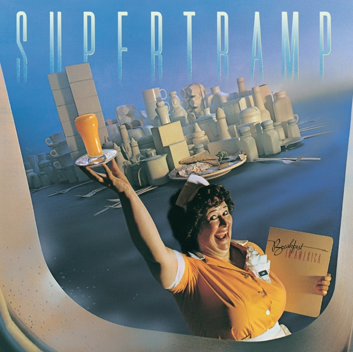

Breakfast In America
Supertramp
Upgrade idea: This original Canadian pressing is a solid copy. The 2010 A&M remaster on 180g is a recommended sonic upgrade. No MOFI or half-speed edition has been issued for this title.
- Original release
- 1979
- Pressing year
- 1979
- Country
- Canada
- Format
- Vinyl LP, Album (Paramount Pressing)
- Label / Cat#
- A&M Records – SP-3708
- Genres
- Rock
- Styles
- Art Rock, Pop Rock
- Discogs release
- 8776696
- Discogs master
- 25362
- Apple Music
- Breakfast In America (Remastered 2026)
- Wikipedia
- Breakfast In America
Production notes
Tracklist (Discogs)
| A1 | Gone Hollywood | 5:15 |
| A2 | The Logical Song | 4:12 |
| A3 | Goodbye Stranger | 5:44 |
| A4 | Breakfast In America | 2:40 |
| A5 | Oh Darling | 4:10 |
| B1 | Take The Long Way Home | 5:09 |
| B2 | Lord Is It Mine | 4:03 |
| B3 | Just Another Nervous Wreck | 4:32 |
| B4 | Casual Conversations | 2:53 |
| B5 | Child Of Vision | 7:12 |
Tracklist (Apple Music)
| 1 | Gone Hollywood (Remastered 2026) | 5:17 |
| 2 | The Logical Song (Remastered 2026) | 4:11 |
| 3 | Goodbye Stranger (Remastered 2026) | 5:50 |
| 4 | Breakfast In America (Remastered 2026) | 2:39 |
| 5 | Oh Darling (Remastered 2026) | 3:45 |
| 6 | Take The Long Way Home (Remastered 2026) | 5:09 |
| 7 | Lord Is It Mine (Remastered 2026) | 4:10 |
| 8 | Just Another Nervous Wreck (Remastered 2026) | 4:26 |
| 9 | Casual Conversations (Remastered 2026) | 2:59 |
| 10 | Child Of Vision (Remastered 2026) | 7:30 |
Personnel & credits
- Mike Doud (2) — Art Direction, Design Concept [Cover]
- Dougie Thomson — Bass
- Mick Haggerty — Design
- Bob C. Benberg — Drums
- Jeff Harris — Engineer [Assistant]
- Lenise Bent — Engineer [Assistant]
- Russel Pope — Engineer [Concert Sound]
- Dave Margereson — Management
- Mark Hanauer — Photography By [Back Cover]
- Aaron Rapoport — Photography By [Cover]
- Supertramp — Producer
- Peter Henderson — Producer, Engineer
- Gary Mielke — Programmed By [Oberheim]
- Dick "Slyde" Hyde — Tuba, Trombone
- Rick Davies — Vocals, Keyboards
- Roger Hodgson — Vocals, Keyboards, Guitar
- John Helliwell — Woodwind [Woodwind Instruments]
- Rick Davies & Roger Hodgson — Words By, Music By
Identifiers
- Barcode: 075021370814
- Barcode: 07502137081
- Pressing Plant ID: PARA (Runouts)
- Matrix / Runout: A&M sp3729-m7 iwt #3 Para (A Side Stamped [Image of Trumpet]): Trumpet)
- Matrix / Runout: PARA sp3708-b (Side B )
Notes
Rehearsed at Southcombe Studios, Burbank.
Recorded at the Village Recorder, Los Angeles.
Mixed at Crystal Sound's Studio 'B', Los Angeles.
Engineered by Peter Henderson of Air London.
All songs © 1979 Almo Music Corp. and Delicate Music (ASCAP)
©℗ 1979 A&M Records, Inc.
This inner sleeve differs from some inner sleeves in that Side 1 has "AMLK 63708" and the A&M logo on the top left corner, there are copyrights on songs at the end of each lyric, so there is no space between the lyrics and the title of the next song, and Side 2 has printing all the way down the right side of the sleeve, with no large gaps.
Supertramp’s 1979 commercial peak — six weeks at #1, ‘The Logical Song,’ ‘Dreamer,’ ‘Give a Little Bit.’ Original 1979 Canadian A&M pressing (SP-3708). Deadwax uses alternate lacquer number SP-3729 (known Canadian variant), matrix AIM SP 3729-M20 / PARA. Barcode 07502137081.